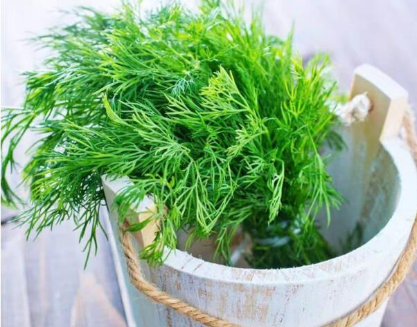

中国的茴香文化有哪些？
茴香，味道浓烈，是北方人最爱的家乡味道。在茴香面前，每一个北方人，无论是北京、天津，还是整个华北东北地区，他们都会像个孩子一样，因为这茴香让他们感受了满满的归属感。
（一） 忘不了的是故乡的茴香味
美食纪录片《早餐中国》火了起来，武汉热干面、长沙米粉、汕头猪血汤、西安油茶麻花……这一道道有着家乡味道的早餐刺激着观众的味蕾。令人怀恋的生活场景，满满的烟火气息，这魂牵梦绕的家乡味最打动人心。
茴香，味道浓烈，是北方人最爱的家乡味道。在茴香面前，每一个北方人，无论是北京、天津，还是整个华北东北地区，他们都会像个孩子一样，因为这茴香让他们感受了满满的归属感。
如此令人欲罢不能的茴香味，究竟能做出何种美味？

茴香饺子，这是每个北方人都会脱口而出的答案。在他们看来，茴香是饺子好吃的灵魂所在，甚至有些老北京人还对茴香爱称为“浑香”，是吃饺子馅的根本所在，没它吃什么都不会香。茴香馅的饺子最懂得抓住人心，和韭菜不同，茴香特别的干，需要多加肉多加油才能好吃。吃完这如此丰富的饺子，哪一个人不是舒坦万分，整个人都是茴香味。
茴香，对北方人来说，不是只是茴香饺子这一种表达方式，茴香打卤面、茴香小油条、茴香炒鸡蛋……这里的每一道茴香菜都会捕获吃货的芳心。
茴香，好像并没得到南方人的喜爱，这是真的吗？总会在百度上看见这样的提问“南方为什么没有茴香？”“南方为什么没人种茴香菜”其实早在鲁迅先生的文章里就有茴香的身影，“我便考一考你，茴香豆的茴字，怎么写的？”孔乙己的提问，让读到文章的我们有了吃茴香豆的欲望。
茴香，是人间家常味，是容易打动人心的味道之一。
（二） 解开误会 茴香≠八角
为什么茴香捕获了北方人的芳心，却没能赢得南方人的味蕾。其实，这里有一个天大的误会。因为在很多南方人的眼里，茴香=八角，是香料。把茴香做成饺子，这是很多南方人都想不到的神奇操作。
其实茴香这是背了八角的锅，事实上，茴香和八角没有半毛钱的关系，只不过是八角和茴香在气味上有相同之处。
茴香本香到底是何物呢？茴香，别名香丝菜，是一种多年生的草本植物，常常能够长到40到200厘米，如果你靠近它，会闻到一股浓浓的香味。在中国，茴香的形状有点类似于芹菜，人们通常都是食用它的嫩叶枝干，而在外国，这茴香还变了个样，大多数的茴香是球茎茴香，根部上长着一个类似于大蒜的根茎。
茴香总体上看，长得有点像家中摆的文竹盆景，叶片是阔三角形的形状。每年的五六月份，是茴香开花的季节。茴香的花是黄色的小花，有点像路边的常见的蕾丝花。等到八九月份，茴香开始结果，和芝麻一样大小的茴香籽簇在枝头。走近一闻，恩，那就是十三香的味道，茶叶蛋的味道。没错，把茴香的果实采集晒干，便是大家熟知的香料了。把茴香籽撒在炭烤的羊肉串上，滋滋冒响，吃起来又是肉香又是麻鲜香的辛辣口感，简直可以算是人间美味了。
（三） 茴香的历史值得“回想”
如此宝贵的食材又是如何带到中国人的餐桌上的呢？这确实值得咱们探究一二。
茴香，可以算是历史悠久的一种食材。早在公元前1550年，在古埃及就有茴香的记载，对于茴香的喜爱，在古埃及还流传着这么一句俗语“有茴香不摘是傻瓜”，足以见得茴香在埃及人民心中的地位。
在希腊，茴香还有那么一段传奇的故事。在公元前490年，希腊人民在马拉松平原抵御波斯人入侵，通过不懈的努力和诱敌深入的战术，希腊人民在这场战争中取得了最后的胜利。而在那时候，马拉松平原开满了整片整片的茴香，经历胜利喜悦的希腊人便把茴香当做成功与荣耀的象征。
在中国，茴香是通过丝绸之路传到中国的，早在《本草纲目》上就记载着“茴香，宿根，深冬生苗作叢，肥茎绿叶，五六月开花，如蛇状花而色黄”。在我国，茴香和人们的生活息息相关，是一种药食两用的食材。
（四）闻着香 吃着更健康的
茴香不仅吃起来味道棒，而且它的营养价值也是非常高。
1、促进消化
茴香中有含有促进消化的茴香油，能在人们食用的过程中，加快消化液的分泌，刺激味蕾。另一方面，还可以促进肠胃的蠕动，增加胃动力，提高肠胃消化的能力。
2、缓解痛经
女孩子最烦恼的就是每个月的痛经问题，隐隐约约的疼痛是最要命的。而茴香之所以能有缓解痛经的功效，是因为茴香油理气活血和止痛的功效。平常腹痛的时候，可以多吃点茴香，可以在一定程度上减轻疼痛感。并且茴香里还有一种天壤的抗菌元素，可以有效的消灭人体中多种致病的病菌，对于我们常犯的胃炎和肠炎有显著的预防作用。
3、减肥健康食材
减肥，是不是很意外。茴香里面含有丰富的维生素和胡萝卜素以及纤维素等对人体有益的元素，而且热量有非常的低，特别适合在减肥的时候食用。
4、健胃消寒
茴香中的茴香油不仅可以刺激胃肠蠕动，油健胃消食的作用，还可以行气祛寒，可以在一定程度上起到缓解痉挛减轻疼痛的作用。
茴香，必须回香！吃的就是它的好滋味。
在人们的心目中茴香，不仅是回想，是思乡的寄托，更是展现中国人味道的食材之一。
 上一篇
上一篇